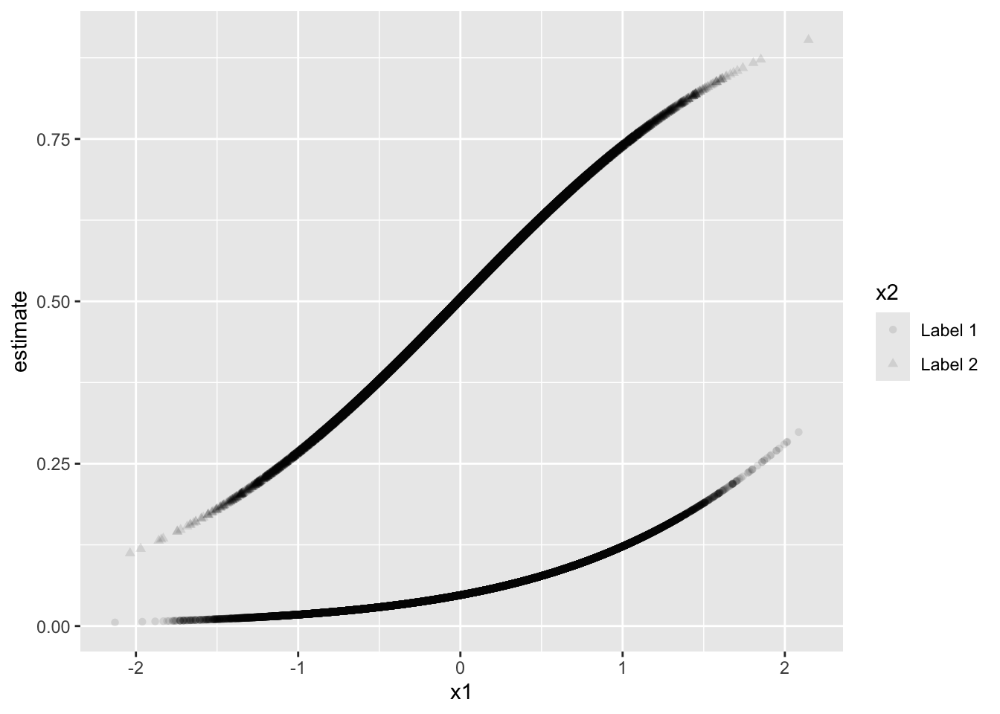
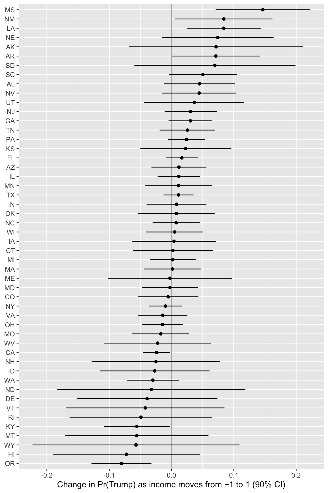
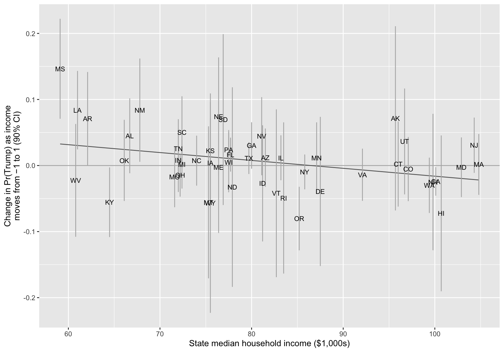
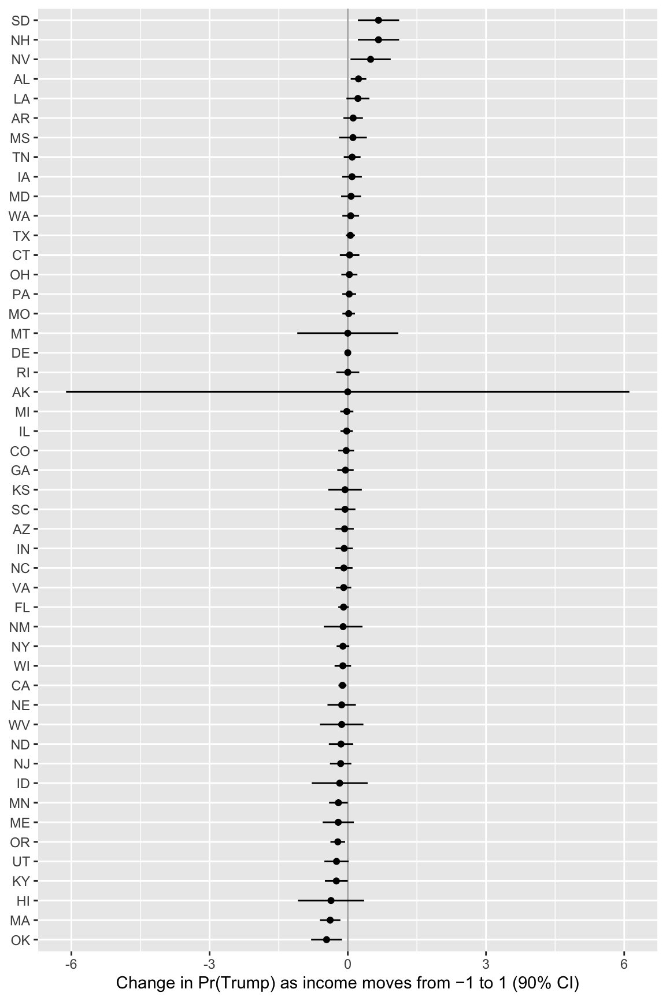
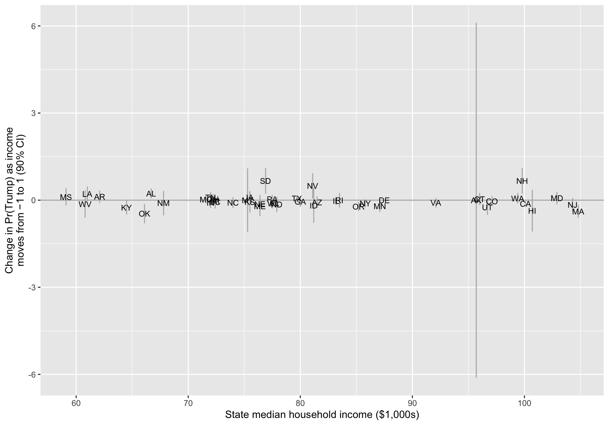

Instructor and TA copy: complete solutions, always open
Complete solutions are available. Work each exercise before you open one.
Exercise 1 Provide Feedback
Your peer review is due before class on Tuesday, October 27. I sent the pairs and instructions by email.
Provide comments on your assigned paper. When providing feedback on colleagues’ work, I like the RAP model here. Most importantly, in this model, “focus time and effort on the highest points of leverage for improving the document.”
The goal is to make suggestions that improve the final product at the end of the semester.
In addition to other comments, please make sure to provide feedback on these three items:
Does the paper make a clear descriptive claim? It might be helpful to review the key readings on descriptive research here, such as Gerring (2012), Holmes et al. (2024), and de Kadt and Grzymala-Busse (2025).
Does the paper make a compelling empirical argument for that descriptive claim?
Does the paper clearly explain the substantive/theoretical/normative importance of that descriptive claim? It’s important that the defense not rely on any assumed/implied causal relationship among the variables.
Exercise 2 Get Up and Running
Get up and running with some interface and some model (Claude Code + Sonnet ($20/mo) recommended) [setup]. This is my first time coaching students through setting these up, so reach out early and often with questions or roadblocks.
Exercise 3 A First Example
Work through A First Example. There’s nothing to write. Just practice the workflow.
Exercise 4 Review a Project of Yours
Use agentic AI to review an existing project of yours.
Start by reviewing a specific R script–you might have the model review the script for errors or figure out ways to speed it up.
Then review a manuscript. Start by having it review the manuscript for typos. Then ask it for a more general review.
Then have it review an entire project.
Experiment with more and less detailed prompts.
Write a paragraph or two on what the agent did well and what it did poorly. In what ways might it help you write better papers? What are the risks of a worse paper?
Exercise 5 Summarize and Criticize a Paper
(For simplicity, you may use a chatbot for this exercise, as well as Exercise 6 and Exercise 7, but you can do it agentically as well. Just put the files in the folder and ask the agent to read them!)
Use agentic AI to summarize and criticize a paper you know well. It is really important that this be a paper you know well, because models are very good at producing something that “looks nice.” Whether it’s “correct” is a different matter. Did the model do a good job summarizing the paper?
Experiment with increasingly detailed, specific prompts (e.g., what’s the sample size?, how do the authors define their key concept?). Does the summary improve?
Exercise 6 Two Papers
Use AI to ask how two papers you know well (again, you must know them well) speak to each other. How well did the model do?
Exercise 7 An Abstract
Give your model an existing draft of your paper and ask it to write an abstract. How well did it do?
Exercise 8 Simulate and Recover; Logit
One important way to test and develop your understanding of statistical models and quantities of interest is to simulate a fake data set with known true quantity of interest (e.g., coefficients or first difference) and then recover that quantity of interest through your estimation procedure.
Do this for logistic regression. As your quantity of interest, use the first difference as one variable moves from the minimum to the maximum with other variables at their mean or mode.
First, simulate a fake data set with a known quantity of interest. Have your agent write this part with the prompt below.1
Second, we can use glm() and {marginaleffects} to recover the true quantity of interest—it should usually be in the 95% CI.
Third, adapt this code to compute the truth for the quantity of interest computed by avg_comparisons(fit, variables = list(x1 = "minmax")).
For this particular version of the simulation and recover exercise, the quantities of interest in (2) and (3) seem similar, but they give different answers–the estimate for (3) is much larger than the estimate for (2). Why?
Start the agent in an empty folder and give it this prompt.
Write an R script named simulate-logit.R that simulates a fake data set from a logit model. I'll use it later to check whether glm(y ~ x1 + x2, family = binomial) recovers the true values. Follow these rules.
- Put set.seed() at the top. Then set the sample size n once. Make it at least 10,000.
- Create one numeric explanatory variable x1, drawn from a normal distribution with mean 0 and SD 0.5.
- Create one qualitative explanatory variable x2 with two labels. Make one label much more common than the other (about 75% vs. 25%).
- Choose the true coefficients (an intercept, a coefficient for x1, and a coefficient for x2, each between -3 and 3) and put them together near the top of the script. Don't include an interaction. Choose values so that y = 1 is rare (a probability near 0.05) for the more common label of x2 and much more common (a probability near 0.5) for the less common label.
- Compute each observation's probability with plogis(). Then draw y (0 or 1) with rbinom().
- Put y, x1, and x2 together in one data frame named data.
- At the end, compute the true first difference: the change in the probability that y = 1 as x1 moves from its minimum to its maximum, with x2 at its most common label. Compute it from the true coefficients with plogis(), not from a fitted model.
- Comment each step using "comments showing intent." Write code that is readable for humans, not necessarily the most compact or efficient.
Hint
Your agent chooses the labels for x2. In datagrid(), use the more common one (e.g., datagrid(x2 = "common")).
Complete solution
Solution: (1)
Your script will differ. Here is one version.
# --- simulate a fake data set ---# set sample sizen <-100000# needs to be large enough so that CI isn't super wide# note: feel free to make the sample size VERY large in this exercise# create explanatory variables## numeric variablex1 <-rnorm(n, 0, 0.5) # sd = 0.5 is my preferred scale for interpretation## qualitative variablex2 <-sample(c("Label 1", "Label 2"),size = n,replace =TRUE,prob =c(0.75, 0.25)) # about 75% will be "Label 1"# create coefficientsb0 <-0b1 <-1b2 <--3# simulate outcome for logit modellinpred <- b0 + b1*x1 + b2*(x2 =="Label 1")p <-plogis(linpred)y <-rbinom(n, size =1, prob = p)# combine into data framedata <-data.frame(y, x1, x2)# truth: fd as x1 moves from min to max; x2 at modepr_hi <-plogis(b0 + b1*max(x1) + b2)pr_lo <-plogis(b0 + b1*min(x1) + b2)pr_hi - pr_lo
[1] 0.2926942
Solution: (2)
# load packageslibrary(marginaleffects)# recover the first quantity of interestfit <-glm(y ~ x1 + x2, data = data, family = binomial)comparisons(fit,variables =list(x1 ="minmax"),newdata =datagrid(x2 ="Label 1"))
x2 Estimate Std. Error z Pr(>|z|) S 2.5 % 97.5 %
Label 1 0.306 0.00965 31.8 <0.001 732.6 0.287 0.325
Term: x1
Type: response
Comparison: Max - Min
Solution: (3)
# truth: avg fd as x1 moves from min to max; x2 at all observed valuespr_hi <-plogis(b0 + b1*max(x1) + b2*(x2 =="Label 1"))pr_lo <-plogis(b0 + b1*min(x1) + b2*(x2 =="Label 1"))mean(pr_hi - pr_lo)
[1] 0.417322
# recover this second quantity of interestavg_comparisons(fit, variables =list(x1 ="minmax"))
Estimate Std. Error z Pr(>|z|) S 2.5 % 97.5 %
0.43 0.00917 46.9 <0.001 Inf 0.412 0.448
Term: x1
Type: response
Comparison: Max - Min
Solution: (4)
The quantity of interest in (2) fixes x2 to "Label 1". The coefficients b0, b1, and b2 make it so that events are relatively rare when x2 equals "Label 1"—see the estimated probabilities (i.e., “expected values”) below. Because the probabilities are close to zero when x2 equals "Label 1", x1 has a smaller effect than when x2 equals "Label 2". I chose the variables and the coefficients to make this the case.
p <-predictions(fit)ggplot(p, aes(x = x1, y = estimate, shape = x2)) +geom_point(alpha =0.1)

The quantity of interest in (3) averages across the effects of x1 for the observed values of x2. This means that about 25% of the times, you’re getting the big Label 2 effect. And about 75% of the time, you’re getting the small Label 1 effect. Averaging these less common big effects and more common small effects gives a larger quantity than looking only at the more common small effect.
Exercise 9 Replicate Jefferson (2024)
Jefferson (2024) [pdf] [supplement] argues that many Black Americans who call themselves “conservative” don’t use the label the way the liberal-conservative scale assumes. The replication code is on the Harvard Dataverse (doi:10.7910/DVN/WDS0EP).
Use your agent to download the replication materials and reproduce every number in the article’s tables and figures (Tables 1–3 and Figures 1–4, plus the numbers in the text that come from them). Have the agent write a Quarto report that runs the code, shows each result next to the number printed in the paper, and tests each one with {testthat}. For example,
test_that("Table 1: correlation for Black respondents", {expect_equal(round(r_black, 2), 0.12)})
The deposit has code but no data. The ANES Time Series Cumulative Data File requires a free account at electionstudies.org, so download it yourself and put it in the folder where you start the agent.
Which results reproduce? Which don’t? Why not?
What did the agent change to make the code run? Did it tell you about every change?
Check three tests by hand. Do they test what they claim to test? Did any test pass when it shouldn’t have?
What did you have to do yourself? What would you put in the prompt next time?
Hint 1
Give the agent the article and the supplement, the Dataverse DOI, and the path to the ANES file you downloaded. Tell it which surveys and years the paper uses. Ask it to work on copies of the authors’ scripts and to list every change it makes.
Hint 2
Ask for tests at the paper’s precision (e.g., round to two decimals before comparing with a number printed to two decimals). Ask the agent to report only what it ran, and to list the numbers it couldn’t test and why.
Hint 3
You don’t need the supplement’s telephone and web robustness section, the Cronbach’s alphas, or the 2012 percentages in footnote 4 (the deposit has no code for them). You don’t need to match the figures’ styling, rewrite the author’s code, or install an old version of R.
Complete solution
Your report will differ from ours. Here’s what a careful replication finds, checked against the ANES file that’s available now (the February 5, 2026 release).
Getting the code to run
The deposit is code only (three R scripts and a README). The scripts read the ANES cumulative file and the 2004–2016 ANES studies from the GitHub package jamesmartherus/anesr. Three problems stop the code as deposited.
rnr_create_tables_and_graphs.R doesn’t parse. Line 416 ends with + followed by two stray backticks.
stargazer 5.2.3 fails on R 4.2 and later (“the condition has length > 1”) when a stargazer() call spans several lines. (You can patch stargazer or check the numbers from the model objects instead.)
The scripts call View(), which stops a non-interactive run, and they expect jen_data/ and jen_output/ folders.
Getting the paper’s numbers
The README names an older release of the cumulative file (2021-11-18). The current release differs in three ways that matter here.
It adds 2024, which has 696 face-to-face interviews. The cleaning script keeps every face-to-face interview from 1972 on, with no end year. So Table 1 comes out as 0.45 (24,473 respondents) and 0.12 (4,296), against 0.44 (24,030) and 0.12 (4,210) in the paper. The table’s title still says “1972-2016.” Adding year <= 2016 to the filter fixes it.
For 2016, the liberal-conservative scale (VCF0803) is now the pre-election question (V161126). The older release used the post-election question (V162171), and the codebook still says it does. This changes 536 of the 1,180 face-to-face respondents in 2016 and moves Model 3 of Table 2 the most (e.g., the coefficient for ideology falls from 0.246 to 0.152). Replacing VCF0803 for 2016 with V162171 from the 2016 study fixes it (1–7 as is, 99 → 9, everything else → 0).
The 1976 weights are rescaled to average 1 (0.783 and 1.175 rather than 1 and 1.5). Dividing them by the smaller weight fixes it.
With these three changes, the cleaned data are identical to those built from the older release, and every number the code computes matches the paper. A few things in the paper have no code (the Cronbach’s alphas, the 2012 percentages in footnote 4, and the supplement’s telephone and web section). Tables 2 and 3 print p-values, but the code prints SEs, so I checked the p-values with t = coefficient / SE.
Tests
A test should compare the computed number with the number typed from the paper, at the paper’s precision.
Check that the agent didn’t take the “expected” value from the output it’s testing, or loosen a tolerance until a test passed. Either makes a test that can’t fail. A test that runs on the current file without the year filter fails on the N’s, which is what we want it to do.
Exercise 10 Red State, Blue State: Part 4
In Parts 2(a), 2(b), and 3, we modeled party ID and the vote in Mississippi and Connecticut. Now let’s fit the same model in every state. Andrew Gelman calls this “the secret weapon”. We fit the same model to many data sets and then plot all the estimates together. (This sets up the hierarchical models, which use all the states at once.)
The data are the 48,582 CES 2024 respondents in the 50 states (no DC) who chose Harris or Trump before the election. vote_rep is 1 for Trump and 0 for Harris. For respondents who had already voted early, it’s their vote. For everyone else, it’s the candidate they preferred. income is the same five-point scale as in Parts 2 and 3 (from −2 to 2). state_median_income is the state’s median household income in thousands of dollars.
In each state, fit the logit vote_rep ~ income. As the effect of income, use the change in Pr(Trump) as income moves from −1 to 1, with a 90% CI.
The “many models” workflow. The tidyverse has a workflow for fitting the same model to many groups (see the “Many models” chapter of the first edition of R for Data Science). It has three steps.
nest() collapses the data to one row per group. The group’s rows go into a list-column called data, so each element of data is a whole data frame.
map() applies a function to each element of a list-column. Inside mutate(), map(data, f) applies f() to each group’s data frame and stores the results in a new list-column (e.g., one fitted model per group).
unnest() expands a list-column of data frames back into ordinary rows and columns.
Here is a toy example. (\(d) is R’s shorthand for function(d).)
# toy example: one row per group, a summary for each group, then back to columnstoy <-tibble(group =c("a", "a", "b", "b"),y =c(1, 3, 10, 14))toy |>nest(data =-group) |>mutate(summary =map(data, \(d) tibble(mean_y =mean(d$y), sd_y =sd(d$y)))) |>unnest(summary)
# A tibble: 2 × 4
group data mean_y sd_y
<chr> <list> <dbl> <dbl>
1 a <tibble [2 × 1]> 2 1.41
2 b <tibble [2 × 1]> 12 2.83
Use the “many models” workflow to fit the logit in each state and compute the effect of income in each state.
Plot the 50 effects with their 90% CIs, sorted from largest to smallest, with the states on the vertical axis. Which states have the largest effects? Which have the smallest? Where are Mississippi and Connecticut? Which states have the widest CIs? Why?
Plot the effects against state_median_income, labeled with the state abbreviations. Does income matter more in poorer states? Which states don’t fit the pattern?
Hint 1
Ask your agent to adapt the toy example to these data. Then check one state by hand (i.e., fit its glm() and run comparisons() yourself).
Hint 2
comparisons(fit, variables = list(income = c(-1, 1)), newdata = datagrid(), conf_level = 0.9) returns one row (i.e., the effect of income for a typical respondent). (Income is the only variable in the model, so every respondent has the same effect.) For the sorted plot, reorder(state_abbr, estimate) orders the states by their effects.
Complete solution
Part 1
I wrote two small functions. One fits the logit to one state’s data. The other computes the effect of income from one fit.
# fit the logit to one state's datafit_logit <-function(data) {glm(vote_rep ~ income, family = binomial, data = data)}# change in pr(trump) as income moves from -1 to 1, with a 90% ciincome_effect <-function(fit) {comparisons(fit,variables =list(income =c(-1, 1)),newdata =datagrid(),conf_level =0.9) |>as_tibble() |>select(estimate, conf.low, conf.high)}# many models: one row per state, one fit per state, one effect per stateces_effects <- ces |>nest(data =-c(state_name, state_abbr, state_median_income)) |>mutate(n =map_int(data, nrow),fit =map(data, fit_logit),effect =map(fit, income_effect)) |>unnest(effect) |>select(state_abbr, state_median_income, n, estimate, conf.low, conf.high)ces_effects
# A tibble: 50 × 6
state_abbr state_median_income n estimate conf.low conf.high
<chr> <dbl> <int> <dbl> <dbl> <dbl>
1 GA 80 1672 0.0303 -0.00480 0.0655
2 NJ 104. 1276 0.0307 -0.0111 0.0726
3 IN 72 1034 0.00801 -0.0401 0.0561
4 MI 72.4 1642 0.00193 -0.0349 0.0387
5 AZ 81.5 1250 0.0119 -0.0322 0.0561
6 CA 100. 3893 -0.0241 -0.0457 -0.00247
7 UT 96.7 406 0.0365 -0.0437 0.117
8 WA 99.4 1118 -0.0300 -0.0719 0.0120
9 OH 72.2 2093 -0.0145 -0.0471 0.0181
10 TX 79.7 3859 0.0112 -0.0128 0.0353
# ℹ 40 more rows
Part 2
# effects from largest to smallestggplot(ces_effects, aes(x = estimate, xmin = conf.low, xmax = conf.high,y =reorder(state_abbr, estimate))) +geom_vline(xintercept =0, color ="grey70") +geom_pointrange(size =0.2) +labs(x ="Change in Pr(Trump) as income moves from −1 to 1 (90% CI)",y =NULL)

# largest and smallest effectsces_effects |>arrange(desc(estimate)) |>head(3)
# A tibble: 3 × 6
state_abbr state_median_income n estimate conf.low conf.high
<chr> <dbl> <int> <dbl> <dbl> <dbl>
1 MS 59.1 405 0.146 0.0708 0.222
2 NM 67.8 348 0.0839 0.00569 0.162
3 LA 61 588 0.0838 0.0244 0.143
ces_effects |>arrange(estimate) |>head(3)
# A tibble: 3 × 6
state_abbr state_median_income n estimate conf.low conf.high
<chr> <dbl> <int> <dbl> <dbl> <dbl>
1 OR 85.2 826 -0.0803 -0.128 -0.0322
2 HI 101. 142 -0.0724 -0.190 0.0455
3 WY 75.5 79 -0.0569 -0.223 0.109
# mississippi and connecticutfilter(ces_effects, state_abbr %in%c("MS", "CT"))
Mississippi has the largest effect. As income moves from −1 to 1, Pr(Trump) rises by about 0.15 (90% CI from 0.07 to 0.22). New Mexico and Louisiana are next (about 0.08 each). Oregon has the smallest effect (about −0.08, from −0.13 to −0.03), followed by Hawaii and Wyoming. Connecticut’s effect is about zero (from −0.06 to 0.07).
The widest CIs belong to the states with the fewest respondents: Wyoming (79 respondents), North Dakota, Alaska, Vermont, and South Dakota (all under about 150). The CI for Wyoming is about 0.33 wide, three times the median width (about 0.11). Two of the extreme effects (Hawaii and Wyoming) come from these small states. Their CIs easily include zero.
Part 3
# effects against state incomeggplot(ces_effects, aes(x = state_median_income, y = estimate,ymin = conf.low, ymax = conf.high)) +geom_hline(yintercept =0, color ="grey70") +geom_smooth(aes(ymin =NULL, ymax =NULL), method ="lm", formula = y ~ x,se =FALSE, color ="grey40", linewidth =0.5) +geom_errorbar(width =0, color ="grey70") +geom_text(aes(label = state_abbr), size =3) +labs(x ="State median household income ($1,000s)",y ="Change in Pr(Trump) as income\nmoves from −1 to 1 (90% CI)")

# correlation between state income and the effectcor(ces_effects$state_median_income, ces_effects$estimate)
[1] -0.3294925
Yes, on average. The line slopes down, and the correlation between state income and the effect is about −0.33. Income matters most in poor Southern states (Mississippi and Louisiana) and least in rich states like Connecticut. But several states sit far from the line. Kentucky and Montana are poorer than the median state but have negative effects. Oregon, near the middle in income, has the most negative effect.
Exercise 11 Red State, Blue State: Part 5
The ANES, the survey political scientists most often use to study voters, is much smaller than the CES. In 2024, it has 2,445 respondents in the 50 states who chose Harris or Trump before the election (the CES has 48,582). vote_rep is measured as in Part 4.
What are the consequences of the smaller sample? How do the CIs compare with the CES? Which states can’t you estimate at all? Why not? Which states have the largest and smallest effects? Should we believe those effects? Does the pattern from Part 4 (larger effects in poorer states) still show up?
Hint 1
A logit needs both Trump and Harris supporters. It also fails when income separates them (e.g., every Trump supporter is richer than every Harris supporter). Count the respondents and the Trump supporters in each state. Look for CIs of width 0 or CIs that run past −1 or 1.
Hint 2
In a state where the logit can’t be estimated, comparisons() may return an error instead of a row. possibly(income_effect, otherwise = NULL) returns NULL instead of stopping, and unnest(effect, keep_empty = TRUE) keeps that state as a row of NAs.
Complete solution
Part 1
# many models on the anes; possibly() keeps going when a state can't be estimatedanes_effects <- anes |>nest(data =-c(state_name, state_abbr, state_median_income)) |>mutate(n =map_int(data, nrow),n_trump =map_dbl(data, \(d) sum(d$vote_rep)),fit =map(data, fit_logit),effect =map(fit, possibly(income_effect, otherwise =NULL))) |>unnest(effect, keep_empty =TRUE) |>select(state_abbr, state_median_income, n, n_trump, estimate, conf.low, conf.high)# the smallest statesanes_effects |>arrange(n) |>print(n =12)
# A tibble: 50 × 7
state_abbr state_median_income n n_trump estimate conf.low conf.high
<chr> <dbl> <int> <dbl> <dbl> <dbl> <dbl>
1 WY 75.5 1 1 NA NA NA
2 VT 82.7 2 1 NA NA NA
3 DE 87.5 4 2 -1.19e-10 -0.0000109 0.0000109
4 HI 101. 4 2 -3.64e- 1 -1.08 0.354
5 AK 95.7 4 1 -1.47e- 3 -6.12 6.11
6 RI 83.5 5 1 -3.99e- 5 -0.249 0.249
7 NH 99.8 5 2 6.67e- 1 0.219 1.11
8 MT 75.3 6 2 0 -1.10 1.10
9 SD 76.9 7 4 6.67e- 1 0.219 1.11
10 ID 81.2 9 6 -1.76e- 1 -0.782 0.431
11 WV 60.8 11 6 -1.33e- 1 -0.605 0.339
12 NV 81.1 13 3 4.95e- 1 0.0583 0.932
# ℹ 38 more rows
# effects from largest to smallestanes_effects |>filter(!is.na(estimate)) |>ggplot(aes(x = estimate, xmin = conf.low, xmax = conf.high,y =reorder(state_abbr, estimate))) +geom_vline(xintercept =0, color ="grey70") +geom_pointrange(size =0.2) +labs(x ="Change in Pr(Trump) as income moves from −1 to 1 (90% CI)",y =NULL)

# effects against state incomeanes_effects |>filter(!is.na(estimate)) |>ggplot(aes(x = state_median_income, y = estimate,ymin = conf.low, ymax = conf.high)) +geom_hline(yintercept =0, color ="grey70") +geom_errorbar(width =0, color ="grey70") +geom_text(aes(label = state_abbr), size =3) +labs(x ="State median household income ($1,000s)",y ="Change in Pr(Trump) as income\nmoves from −1 to 1 (90% CI)")

Part 2
# median ci width: ces vs. anestibble(survey =c("CES", "ANES"),median_width =c(median(ces_effects$conf.high - ces_effects$conf.low),median(anes_effects$conf.high - anes_effects$conf.low, na.rm =TRUE)))
# A tibble: 2 × 2
survey median_width
<chr> <dbl>
1 CES 0.111
2 ANES 0.425
# largest and smallest effects in the anesanes_effects |>arrange(desc(estimate)) |>head(4)
# A tibble: 4 × 7
state_abbr state_median_income n n_trump estimate conf.low conf.high
<chr> <dbl> <int> <dbl> <dbl> <dbl> <dbl>
1 OK 66.1 18 8 -0.461 -0.796 -0.126
2 MA 105. 49 17 -0.383 -0.605 -0.161
3 HI 101. 4 2 -0.364 -1.08 0.354
4 KY 64.5 35 16 -0.249 -0.496 -0.00101
# the pattern in the states with at least 30 respondentsanes_effects |>filter(n >=30) |>summarize(states =n(), r =cor(state_median_income, estimate))
# A tibble: 1 × 2
states r
<int> <dbl>
1 30 -0.377
The ANES has about 50 respondents per state; the CES has about 1,000.
The CIs are about four times wider. The median width is about 0.43 in the ANES and about 0.11 in the CES. Even California, the largest state in the ANES (206 respondents), has a CI about 0.18 wide. Some CIs run past −1 or 1 (e.g., South Dakota and New Hampshire), which is impossible for a change in a probability. These CIs are the estimate ± 1.64 SEs. That approximation fails with so few respondents.
Some states can’t be estimated at all. Wyoming has one respondent and Vermont has two, so comparisons() returns nothing. In other tiny states, the model breaks. Delaware (4 respondents) gives an effect of about 0 with a CI of width 0, and Alaska (4 respondents) gives a CI from about −6 to 6. Neither CI tells us anything about the effect.
The extreme effects are far more extreme than in the CES. The largest come from tiny states. South Dakota (7 respondents) and New Hampshire (5) are about 0.67, and Nevada (13) is about 0.50. At the other end, Oklahoma (18 respondents) is about −0.46 and Massachusetts (49) is about −0.38. In the CES, no state is above 0.15 or below −0.08. With so few respondents, the most extreme estimates are mostly noise.
Mississippi and Connecticut are hard to pin down. Connecticut’s effect is about 0.04 (from −0.17 to 0.25), close to the CES, but the CI is about three times as wide. Mississippi has 17 respondents. Its effect is about 0.11, with a CI from −0.19 to 0.41, which includes both zero and the CES estimate (0.15).
The pattern from Part 4 is still there among the larger states. Among the 30 states with at least 30 respondents, the correlation between state income and the effect is about −0.38, close to the CES (−0.33). But the small states’ estimates are so noisy that the plot against state income doesn’t show it.
Fitting each state separately works when each state has many respondents, as in the CES. In the ANES, most states have too few respondents to say much on their own. A hierarchical model lets those states borrow information from the other states.
Footnotes
In the future, I’ll ask you to write this part yourself by adapting this code to other models (e.g., ZINB).↩︎